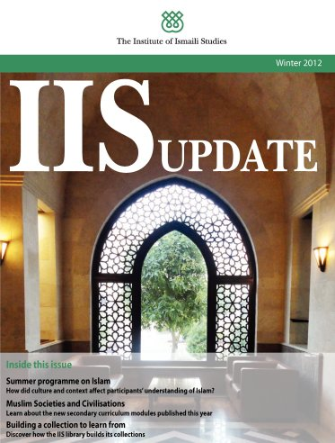

You will need the Flash plugin to view this dynamic publication
Download the Flash plugin for free here. Just refresh this page after installing Flash.
Also make sure that javascript is enabled in your browser.

Alternatively, you can download this publication in PDF-format - Click here.
Page 1Page 2Page 3Page 4Page 5Page 6Page 7Page 8Page 9Page 10Page 11Page 12Page 13Page 14Page 15Page 16Page 17Page 18Page 19Page 20Page 21Page 22Page 23Page 24Winter2012IISUPDATEBuildingacollectiontolearnfromDiscoverhowtheIISlibrarybuildsitscollectionsMuslimSocietiesandCivilisationsLearnaboutthenewsecondarycurriculummodulespublishedthisyearSummerprogrammeonIslamHowdidcultureandcontextax0ectparticipantsx19understandingofIslamInsidethisissue